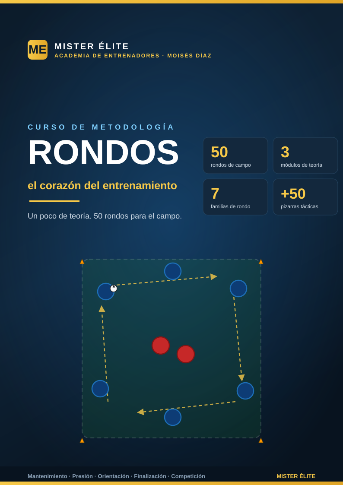

Rondos: el corazón del entrenamiento
Curso de metodología · MISTER ÉLITE — Moisés Díaz
Poca teoría, mucha aplicación práctica. Una primera parte de fundamentos y diseño, y luego 50 rondos listos para llevar al campo, cada uno con su pizarra, sus medidas exactas, sus provocaciones medibles y su coaching.
¿A quién va dirigido?
A entrenadores y preparadores de cualquier categoría que quieran dominar el rondo como herramienta de entrenamiento: entenderlo, diseñarlo, progresarlo, dirigirlo y conectarlo con el modelo de juego. No es un curso de un sistema concreto (1-4-3-3, 1-4-4-2…), sino de metodología transversal que sirve a cualquier estilo, posesional o de transición.
Objetivos del curso
- Comprender qué es un rondo y por qué es la tarea reina del entrenamiento (especificidad, densidad, regulabilidad).
- Manejar el panel de mandos de seis variables para diseñar rondos a medida de cada objetivo.
- Saber progresar un rondo (fácil → difícil) y coachearlo con criterio (feedback, freeze, intensidad).
- Conectar el rondo con la cadena de transferencia hacia el juego de posición y el partido.
- Disponer de un banco de 50 rondos ejecutables, repartidos en 7 familias, y de un plan de sesiones para integrarlos en el microciclo.
Cómo está organizado
El curso tiene 3 módulos de teoría (concisos) y 8 archivos de práctica (los 50 rondos en 7 familias + el plan de sesiones).
Teoría — modulos/
| Módulo | Contenido |
|---|---|
| 01 · Fundamentos | Qué es un rondo, origen (tradición neerlandesa + La Masia), por qué es la tarea reina, los tipos de beneficio. |
| 02 · Metodología y diseño | Las 6 variables de diseño, cómo progresar y cómo coachear un rondo, carga y ubicación. |
| 03 · Del rondo al juego | La cadena de transferencia, qué entrena cada familia, encadenar en sesión y microciclo. |
Práctica — ejercicios/
| Archivo | Familia | Rondos |
|---|---|---|
| 00 · Plan de sesiones | Integración en 2 microciclos (MD) | — |
| 01 · Iniciación y mantenimiento | Familia 1 (base técnica) | Rondos 1–7 |
| 02 · Presión y recuperación | Familia 2 (foco defensivo) | Rondos 8–14 |
| 03 · Posicionales y de orientación | Familia 3 (cambio de orientación) | Rondos 15–21 |
| 04 · Con líneas y comodines | Familia 4 (progresión/dirección) | Rondos 22–28 |
| 05 · Finalización | Familia 5 (porterías/portero) | Rondos 29–35 |
| 06 · Competitivos y condicionados | Familia 6 (situacionales) | Rondos 36–43 |
| 07 · Lúdicos y de calentamiento | Familia 7 (activación) | Rondos 44–50 |
Recorrido sugerido: lee los 3 módulos en orden, luego elige la familia según el principio que quieras entrenar esa semana y apóyate en el plan de sesiones para encajar los rondos en el microciclo.
Leyenda de la notación
Todas las pizarras del curso usan una notación única:
| Elemento | Representación | Significado |
|---|---|---|
| Poseedores | Fichas AZULES | Los que conservan el balón (perímetro del rondo). |
| Defensores / recuperadores | Fichas ROJAS | Los del medio que presionan y roban. |
| Comodines / apoyos | Fichas ÁMBAR | Neutrales: juegan siempre con quien tiene el balón. |
| Espacio del rondo | Cuadro/rectángulo/círculo con conos | Área delimitada; a veces sombreada para marcar zonas. |
Flechas:
| Flecha | Acción |
|---|---|
| Amarilla discontinua | Pase |
| Azul | Conducción |
| Blanca | Desmarque / apoyo |
| La del defensor que entra | Presión / recuperación |
Las secuencias se numeran 1-2-3 para leer el orden de las acciones. El título de cada pizarra sigue el formato "Rondo N — Nombre", con la organización en el subtítulo ("X v Y (+Z comodines) · medidas").
Glosario breve
- Rondo: tarea de mantenimiento–recuperación del balón en superioridad numérica, en espacio reducido y con posiciones de partida fijadas.
- Relación numérica: ratio poseedores v defensores (4v1, 5v2, 6v3…). Fija la dificultad estructural.
- Comodín: jugador neutral (ámbar) que juega con quien posee; crea superioridad y fija dónde circula el balón.
- Provocación: regla que fuerza un comportamiento sin pedirlo verbalmente (p. ej. "prohibido devolver el pase").
- Tercer hombre: quien recibe la pared no es quien la inició; el balón circula a un tercero libre.
- Cambio de orientación: trasladar el balón al lado contrario a la presión para jugar por el espacio libre.
- Zona de reto: nivel de exigencia en el que el equipo conserva ≈ 60–75 % de las series (ni aburre ni colapsa).
- Freeze: congelar el juego un instante para señalar una imagen concreta (línea de pase no vista) y reanudar.
- Transferencia: que lo entrenado en el rondo aparezca resuelto en el partido.
- Juego de posición: rondo con zonas, dirección y posiciones reconocibles; el escalón siguiente al rondo.
- MD (matchday): día de partido. MD-4, MD-3… son los días previos; estructuran la carga del microciclo.
- RSA (Repeated Sprint Ability): capacidad de repetir esfuerzos cortos de alta intensidad con recuperación incompleta.
Recursos
- Diagramas: índice de pizarras solicitadas — 50 rondos + diagramas de teoría.
MISTER ÉLITE — Moisés Díaz · "Rondos: el corazón del entrenamiento"